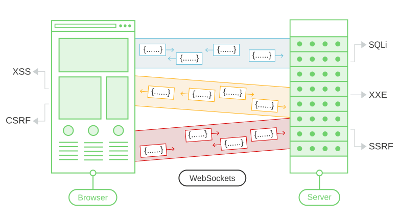

Testing for WebSockets security vulnerabilities
In this section, we'll explain how to manipulate WebSocket messages and connections, describe the kinds of security vulnerabilities that can arise with WebSockets, and give some examples of exploiting WebSockets vulnerabilities.
WebSockets
WebSockets are widely used in modern web applications. They are initiated over HTTP and provide long-lived connections with asynchronous communication in both directions.
WebSockets are used for all kinds of purposes, including performing user actions and transmitting sensitive information. Virtually any web security vulnerability that arises with regular HTTP can also arise in relation to WebSockets communications.
Read more

Labs
If you're already familiar with the basic concepts behind WebSockets vulnerabilities and just want to practice exploiting them on some realistic, deliberately vulnerable targets, you can access all of the labs in this topic from the link below.
Manipulating WebSocket traffic
Finding WebSockets security vulnerabilities generally involves manipulating them in ways that the application doesn't expect. You can do this using Burp Suite.
You can use Burp Suite to:
- Intercept and modify WebSocket messages.
- Replay and generate new WebSocket messages.
- Manipulate WebSocket connections.
Intercepting and modifying WebSocket messages
You can use Burp Proxy to intercept and modify WebSocket messages, as follows:
- Open Burp's browser.
- Browse to the application function that uses WebSockets. You can determine that WebSockets are being used by using the application and looking for entries appearing in the WebSockets history tab within Burp Proxy.
- In the Intercept tab of Burp Proxy, ensure that interception is turned on.
- When a WebSocket message is sent from the browser or server, it will be displayed in the Intercept tab for you to view or modify. Press the Forward button to forward the message.
Note
You can configure whether client-to-server or server-to-client messages are intercepted in Burp Proxy. Do this in the Settings dialog, in the WebSocket interception rules settings.
Replaying and generating new WebSocket messages
As well as intercepting and modifying WebSocket messages on the fly, you can replay individual messages and generate new messages. You can do this using Burp Repeater:
- In Burp Proxy, select a message in the WebSockets history, or in the Intercept tab, and choose "Send to Repeater" from the context menu.
- In Burp Repeater, you can now edit the message that was selected, and send it over and over.
- You can enter a new message and send it in either direction, to the client or server.
- In the "History" panel within Burp Repeater, you can view the history of messages that have been transmitted over the WebSocket connection. This includes messages that you have generated in Burp Repeater, and also any that were generated by the browser or server via the same connection.
- If you want to edit and resend any message in the history panel, you can do this by selecting the message and choosing "Edit and resend" from the context menu.
Manipulating WebSocket connections
As well as manipulating WebSocket messages, it is sometimes necessary to manipulate the WebSocket handshake that establishes the connection.
There are various situations in which manipulating the WebSocket handshake might be necessary:
- It can enable you to reach more attack surface.
- Some attacks might cause your connection to drop so you need to establish a new one.
- Tokens or other data in the original handshake request might be stale and need updating.
You can manipulate the WebSocket handshake using Burp Repeater:
- Send a WebSocket message to Burp Repeater as already described.
- In Burp Repeater, click on the pencil icon next to the WebSocket URL. This opens a wizard that lets you attach to an existing connected WebSocket, clone a connected WebSocket, or reconnect to a disconnected WebSocket.
- If you choose to clone a connected WebSocket or reconnect to a disconnected WebSocket, then the wizard will show full details of the WebSocket handshake request, which you can edit as required before the handshake is performed.
- When you click "Connect", Burp will attempt to carry out the configured handshake and display the result. If a new WebSocket connection was successfully established, you can then use this to send new messages in Burp Repeater.
WebSockets security vulnerabilities
In principle, practically any web security vulnerability might arise in relation to WebSockets:
- User-supplied input transmitted to the server might be processed in unsafe ways, leading to vulnerabilities such as SQL injection or XML external entity injection.
- Some blind vulnerabilities reached via WebSockets might only be detectable using out-of-band (OAST) techniques.
- If attacker-controlled data is transmitted via WebSockets to other application users, then it might lead to XSS or other client-side vulnerabilities.
Manipulating WebSocket messages to exploit vulnerabilities
The majority of input-based vulnerabilities affecting WebSockets can be found and exploited by tampering with the contents of WebSocket messages.
For example, suppose a chat application uses WebSockets to send chat messages between the browser and the server. When a user types a chat message, a WebSocket message like the following is sent to the server:
{"message":"Hello Carlos"}The contents of the message are transmitted (again via WebSockets) to another chat user, and rendered in the user's browser as follows:
<td>Hello Carlos</td>In this situation, provided no other input processing or defenses are in play, an attacker can perform a proof-of-concept XSS attack by submitting the following WebSocket message:
{"message":"<img src=1 onerror='alert(1)'>"}Manipulating the WebSocket handshake to exploit vulnerabilities
Some WebSockets vulnerabilities can only be found and exploited by manipulating the WebSocket handshake. These vulnerabilities tend to involve design flaws, such as:
-
Misplaced trust in HTTP headers to perform security decisions, such as the
X-Forwarded-Forheader. - Flaws in session handling mechanisms, since the session context in which WebSocket messages are processed is generally determined by the session context of the handshake message.
- Attack surface introduced by custom HTTP headers used by the application.
Using cross-site WebSockets to exploit vulnerabilities
Some WebSockets security vulnerabilities arise when an attacker makes a cross-domain WebSocket connection from a web site that the attacker controls. This is known as a cross-site WebSocket hijacking attack, and it involves exploiting a cross-site request forgery (CSRF) vulnerability on a WebSocket handshake. The attack often has a serious impact, allowing an attacker to perform privileged actions on behalf of the victim user or capture sensitive data to which the victim user has access.
Read more
How to secure a WebSocket connection
To minimize the risk of security vulnerabilities arising with WebSockets, use the following guidelines:
- Use the
wss://protocol (WebSockets over TLS). - Hard code the URL of the WebSockets endpoint, and certainly don't incorporate user-controllable data into this URL.
- Protect the WebSocket handshake message against CSRF, to avoid cross-site WebSockets hijacking vulnerabilities.
- Treat data received via the WebSocket as untrusted in both directions. Handle data safely on both the server and client ends, to prevent input-based vulnerabilities such as SQL injection and cross-site scripting.